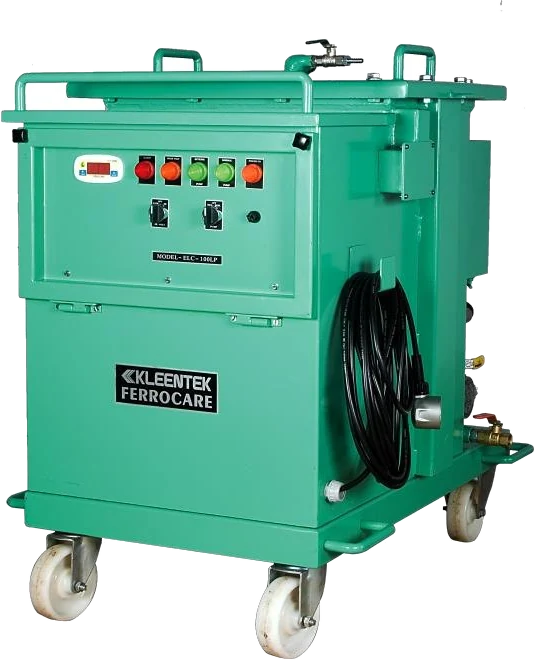
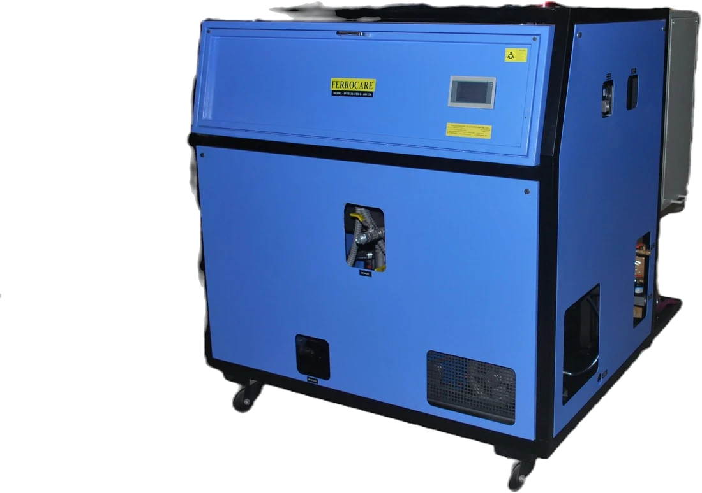
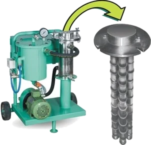
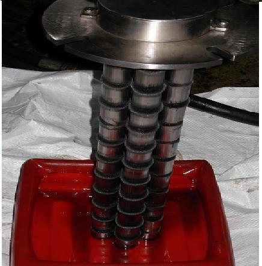
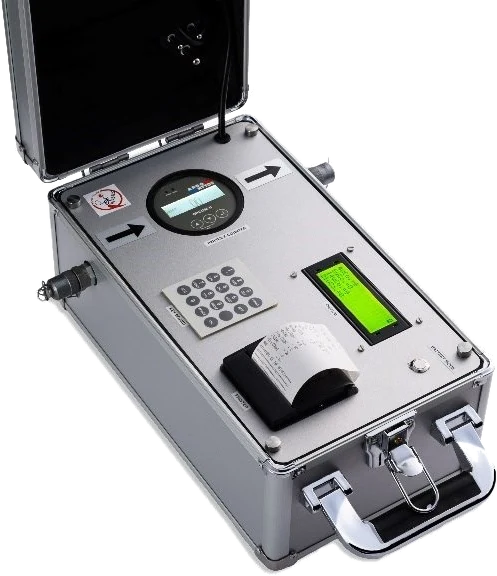
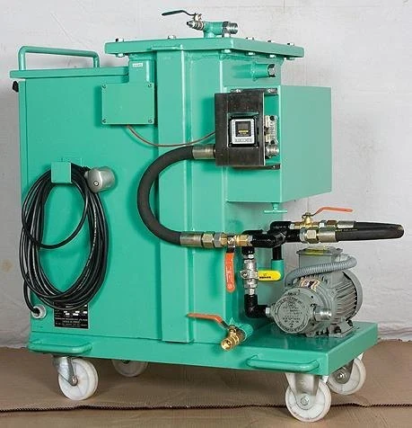

ELC Series

Electrostatic Liquid Cleaner
Sub-micron cleaning without touching the oil's chemistry
1 µ & belowRemoves sludge & varnishIoT / MODBUS ready
9 models
Details
Navigate
HomeCompanyProductsServicesFerrocare InternationalHydraulic UnitsPiston PumpsNachi – Japan Special SteelsContactProduct families
Electrostatic Liquid CleanersLow Vacuum DehydrationGearbox Oil FiltrationMagnetic SeparatorOil Test EquipmentEPT Machines FAQsReach us
+91 20 4603 3076 info@ferrocare.comS. No. 32/3/8, Yewlewadi Road,
Kondhwa Budruk, Pune – 411048
Maharashtra, India
Machines and instruments that keep industrial oil clean — from electrostatic cleaning and vacuum dehydration to magnetic separation and oil testing.
Showing 6 products · 34 models

Sub-micron cleaning without touching the oil's chemistry

100 % free water and emulsified moisture, removed

Attach to the gearbox, lift the carbon out

Rare-earth magnets that pull out what filters miss

Measure the oil instead of guessing about it

Acid control for fire-resistant fluids
No families match that search. Try a model number such as ELC 100, LVDH 600 or OPCOM.
Pick the fluid you run and the contamination you are seeing. This is the short version of how a Ferrocare engineer narrows the range — the real sizing happens against your duty point.
Tell us your oil type, reservoir volume and the problem you are seeing. Our engineers will recommend the right machine.